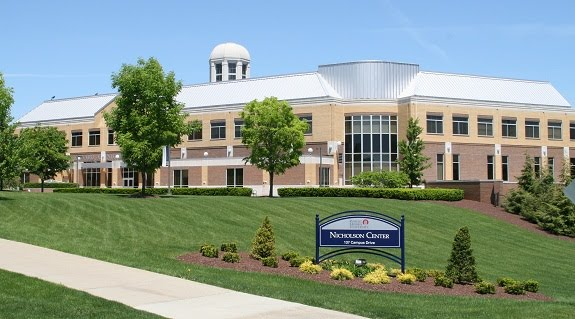

Completed in 2012, the Wheatley Center is the home for the School of Communications and Information Systems. This custom-designed facility provides Media Arts with all-new classrooms, studios, labs, and workshops needed to deliver the curriculum for the design and photography concentrations (TV/Video facilities still housed in the Academic Media Center in Patrick Henry). The Wheatley Center is truly a destination that students can call their own. In addition to the curricular spaces, the facility features the 24/7 homework lab for Media Arts students, cafe, student lounge, and the Media Arts Gallery. Whether you need to do work, grab a bite to eat, or get inspired, Wheatley can accommodate.
